Webクローラーの比較一覧
当サイトのアクセスログなどで確認したWebクローラーのリスト一覧です。検索エンジンやGAFAをはじめ、広告やSEO、セキュリティー関連、非営利組織など様々な種類があります。
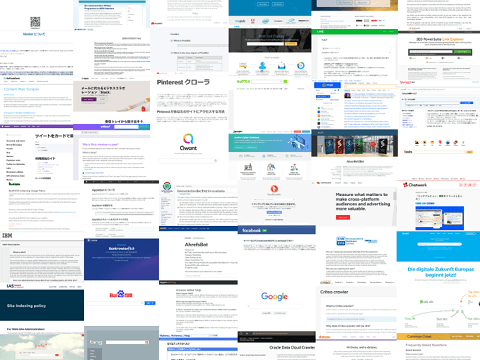
クローラーとは？
クローラーは、サイト上のリンクを辿ったり、サイトマップなどのURLリストでインターネット上を自動で巡回して情報収集をしているロボットのことです。
スパイダーやボットなどとも呼ばれていますが、検索サイトの場合はウェブページや画像など、オークションの比較サイトなら価格の情報、マーケティング会社なら広告関連、あるいは悪意のあるサイトならセキュリティーの脆弱性など、様々な目的で情報収集がされています。
アクセスログを確認すれば、たいていはUser-Agentでボット名が分かり、クロールの目的を参照できるURLも記載しています。例えば、検索サイト「Bing」の場合、クローラー名は「bingbot」となっており、またクロールの目的を参照できるURLも記載されています。
これらのクローラーをアクセスログで確認する方法や.htaccessなどで拒否する方法についてはこちらのページをご参照ください。
→ クローラーアクセスの確認方法
概ね、User-Agentで正体を明かしてくるボットは特に問題はないですが、スクレイピングなどで偽装して大量にアクセスしてくる場合はサーバーに負担がかかることがあります。正体不明なアクセスについては拒否しておくとよいでしょう。
検索サイト系
各国の検索エンジンはアクセスを運んできてくれるメリットがあるため、以下のクローラーを拒否する必要は全くないと思います。むしろ、検索エンジンに登録申請をして巡回してもらうとよいでしょう。
■Google
ボット名：「Googlebot」
http://www.google.com/bot.html
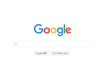
"Mozilla/5.0 (compatible; Googlebot/2.1; +http://www.google.com/bot.html)"
（※Googleはパソコン用やスマホ用などで数種類があります。）
■Bing（マイクロソフト）
「bingbot」
http://www.bing.com/bingbot.htm
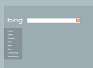
"Mozilla/5.0 (compatible; bingbot/2.0; +http://www.bing.com/bingbot.htm)"
"msnbot/2.0b (+http://search.msn.com/msnbot.htm)"
■yahoo!（米国）
「Slurp」
http://help.yahoo.com/help/us/ysearch/slurp
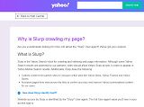
"Mozilla/5.0 (compatible; Yahoo! Slurp; http://help.yahoo.com/help/us/ysearch/slurp)"
■Yandex（ロシア）
「Yandex」
http://yandex.com/bots
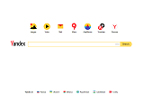
"Mozilla/5.0 (compatible; YandexBot/3.0; +http://yandex.com/bots)"
■Mail.ru（ロシア）
「Mail.RU」
http://go.mail.ru/help/robots
"Mozilla/5.0 (compatible; Linux x86_64; Mail.RU_Bot/2.0; +http://go.mail.ru/help/robots)"
■baidu（中国：シェア１位）
「Baiduspider」
http://www.baidu.com/search/spider.html
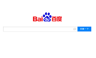
"Mozilla/5.0 (compatible; Baiduspider/2.0;+http://www.baidu.com/search/spider.html"
■捜狗（中国：シェア２位）
「Sogou」
http://www.sogou.com/docs/help/webmasters.htm#07
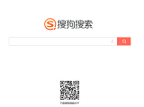
"Sogou web spider/4.0(+http://www.sogou.com/docs/help/webmasters.htm#07)"
■DuckDuckGo（米国：プライベート検索エンジン）
「DuckDuckBot」
https://help.duckduckgo.com/duckduckgo-help-pages/results/duckduckbot/
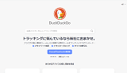
W3Cのサイト内検索はDuckDuckGoが使用されているようです。
■Seznam（チェコ）
「SeznamBot」
http://napoveda.seznam.cz/en/seznambot-intro/
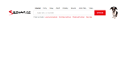
"Mozilla/5.0 (compatible; SeznamBot/3.2; +http://napoveda.seznam.cz/en/seznambot-intro/)"
■Qwant（フランス）
「Qwantify」
https://www.qwant.com/
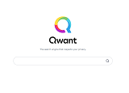
"Mozilla/5.0 (compatible; Qwantify/2.4w; +https://www.qwant.com/)/2.4w"
■istella（イタリア）
「istellabot」
http://www.istella.it/
"istellabot/t.1.13"
■Cliqz（ドイツ）
「Cliqzbot」
http://cliqz.com/company/cliqzbot
"Mozilla/5.0 (compatible; Cliqzbot/3.0; +http://cliqz.com/company/cliqzbot)"
■NAVER（韓国）
「Yeti」
https://help.naver.com/support/robots.html
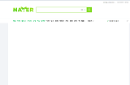
"Mozilla/5.0 (compatible; Yeti/1.1; +http://naver.me/spd)"
■Mojeek（イギリス）
「MojeekBot」
https://www.mojeek.com/bot.html
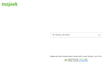
"Mozilla/5.0 (compatible; MojeekBot/0.7; +https://www.mojeek.com/bot.html)"
■CocCoc（ベトナム）
「coccocbot」
http://help.coccoc.com/searchengine
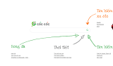
"Mozilla/5.0 (compatible; coccocbot-web/1.0; +http://help.coccoc.com/searchengine)"
GAFA、Twitter関連
──── GAFA ────
GAFA（Google,Apple,Facebook,Amazon）についても拒否する必要はないでしょう。
■Google（※同上）
■Apple
「Applebot」
http://www.apple.com/go/applebot

"Mozilla/5.0 (Macintosh; Intel Mac OS X 10_10_1) AppleWebKit/600.2.5 (KHTML, like Gecko) Version/8.0.2 Safari/600.2.5 (Applebot/0.1; +http://www.apple.com/go/applebot)"
上記ページに「Applebot は、Apple の Web クローラーです。Siri や Spotlight 検索候補などの製品は、Applebot を利用しています。」とあるため、SiriやSpotlight検索関連でのクロールかと思います。
■Facebook
「facebookexternalhit」
http://www.facebook.com/externalhit_uatext.php
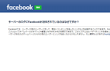
"facebookexternalhit/1.1 (+http://www.facebook.com/externalhit_uatext.php)"
上記ページには「もしかしたら、他のユーザーがあなたのホームページからその他のユーザーにリンクを送ったからかもしれません。」とあるため、OGP画像でのアクセスかと思います。
■Amazon
「AmazonAdBot」
https://adbot.amazon.com
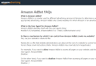
"Mozilla/5.0 (compatible; AmazonAdBot/1.0; +https://adbot.amazon.com)"
上記ページには「AmazonAdBotは、Amazonまたは広告主パートナーが広告を配信できるWebサイトのみをクロールします。」とあるため、広告配信のためのクロールかと思います。
──── Twitter ────
Twitterについても、公式、非公式のボットに関わらず、特に拒否する必要はないかと思います。
■Twitter
「Twitterbot」
https://developer.twitter.com/ja/docs/tweets/optimize-with-cards/guides/getting-started
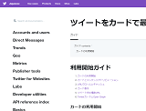
上記ページには、「Twitterのクローラは、Googleのrobots.txt仕様に準拠して、URLをスキャンします。カードマークアップのあるページがブロックされると、カードは表示されません。」とあるため、Twitterカード関連のクロールかと思います。
Yahoo!JAPAN、LINE関連
──── ヤフー（日本） ────
以前まで日本のヤフー検索は独自の検索システムを使用していたため、Googleとヤフーでそれぞれ別々にSEO対策をする必要がありました。現在ではヤフー検索もGoogleの検索システムを使用しているため、ヤフーのクローラーはほとんど見かけないかと思います。
ただし、「検索サービスでの利用や研究、開発などの目的で、ウェブページの収集と蓄積を行っています。」とのことで、クロール自体はしているもようです。
■Yahoo!JAPAN
「Y!J-BRW」など
https://www.yahoo-help.jp/app/answers/detail/p/595/a_id/42716
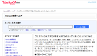
"Y!J-BRW/1.0 (https://www.yahoo-help.jp/app/answers/detail/p/595/a_id/42716)"
──── LINE ────
LINEについては、「Linespiderは、LINEサービス内で多様な検索結果を提供すると同時に、」とあるため、検索関連なのかもしれません。
■LINE
「Linespider」
https://help2.line.me/linesearchbot/web/pc?lang=ja&contentId=50006055
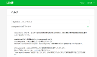
"Mozilla/5.0 (compatible;Linespider...)"
──── はてな ────
はてなアンテナによるサイトの更新チェックのクロールのようです。
■はてな
「Hatena Antenna」
http://a.hatena.ne.jp/help
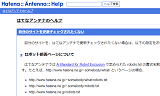
"Hatena Antenna/0.5 (http://a.hatena.ne.jp/help)"
非営利組織、セキュリティー関連
──── 非営利組織 ────
研究機関などの非営利組織系も特に拒否する必要はないかと思います。
■Common Crawl
「CCBot」
https://commoncrawl.org/faq/
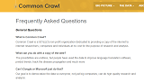
"CCBot/2.0 (https://commoncrawl.org/faq/)"
■NICT
「ICC-Crawler」
http://ucri.nict.go.jp/en/icccrawler.html
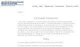
"ICC-Crawler/2.0 (Mozilla-compatible; ; http://ucri.nict.go.jp/en/icccrawler.html)"
■Steeler
「Steeler」
http://www.tkl.iis.u-tokyo.ac.jp/~crawler/
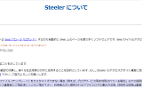
"Mozilla/5.0 (compatible; Steeler/3.5; http://www.tkl.iis.u-tokyo.ac.jp/~crawler/)"
■COMSYS
「Researchscan」
http://researchscan.comsys.rwth-aachen.de
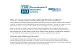
"Mozilla/5.0 zgrab/0.x (compatible; Researchscan/t13rl; +http://researchscan.comsys.rwth-aachen.de)"
■Let's Encrypt
「Let's Encrypt」
https://www.letsencrypt.org
"Mozilla/5.0 (compatible; Let's Encrypt validation server; +https://www.letsencrypt.org)"
無料SSLの認証の際にこちらのクローラーがやってくるようです。たまにAWS経由のアクセスなどもあるため、認証が失敗する場合はIPアドレスなどで拒否していないかを確認してみるとよいでしょう。
■Wikipedia
「IABot」
https://meta.wikimedia.org/wiki/InternetArchiveBot/FAQ_for_sysadmins
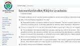
"IABot/2.0 (+https://meta.wikimedia.org/wiki/InternetArchiveBot/FAQ_for_sysadmins) (Checking if link from Wikipedia is broken and needs removal)"
こちらはウィキペディア内の記事にある外部サイトへのリンク切れをチェックしているようです。
──── セキュリティー関連 ────
セキュリティー関連も拒否する必要はないかと思います。
■IBM
「oBot」
http://www.xforce-security.com/crawler/
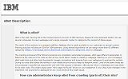
"Mozilla/5.0 (compatible; oBot/2.3.1; http://www.xforce-security.com/crawler/)"
"Mozilla/5.0 (compatible; oBot/2.3.1; +http://filterdb.iss.net/crawler/)"
■Netcraft
「NetcraftSurveyAgent」
https://www.netcraft.com/
"Mozilla/5.0 (compatible; NetcraftSurveyAgent/1.0; +info@netcraft.com)"
広告関連
広告関連のクローラーは多いですが、自サイトが広告主の目に止まる可能性もあるため、特に拒否する必要はないかと思います。
■Yahoo
「Monitoring」
https://help.yahoo.com/kb/yahoo-ad-monitoring-SLN24857.html
"Mozilla/5.0 (compatible; Yahoo Ad monitoring; https://help.yahoo.com/kb/yahoo-ad-monitoring-SLN24857.html) … "
■The Trade Desk
「TTD-Content」
https://www.thetradedesk.com/general/ttd-content
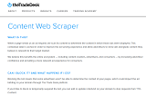
"Mozilla/5.0 (compatible; TTD-Content; +https://www.thetradedesk.com/general/ttd-content)"
■Grapeshot
「grapeshot」
http://www.grapeshot.co.uk/crawler.php
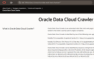
"Mozilla/5.0 (compatible; GrapeshotCrawler/2.0; +http://www.grapeshot.co.uk/crawler.php)"
■IAS
「ias_crawler」
http://integralads.com/site-indexing-policy/
"IAS crawler (ias_crawler; http://integralads.com/site-indexing-policy/)"
"heritrix/2.0.2 +http://www.adsafemedia.com"
■Comscore
「proximic」
https://www.comscore.com/Web-Crawler
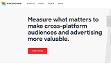
"Mozilla/5.0 (compatible; proximic; +https://www.comscore.com/Web-Crawler)"
"Mozilla/5.0 (compatible; proximic; +http://www.proximic.com/info/spider.php)"
■Criteo
「CriteoBot」
https://www.criteo.com/criteo-crawler/
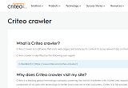
"CriteoBot/0.1 (+https://www.criteo.com/criteo-crawler/)"
■dataxu
「DataXu」
http://dataxu.com
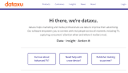
"Mozilla/5.0 (compatible; DataXu/1.0; +http://dataxu.com)"
■MixRank
「MixrankBot」
https://mixrank.com/
"Mozilla/5.0 (compatible; MixrankBot; crawler@mixrank.com)"
■Quantcast
「Quantcastbot」
http://www.quantcast.com/bot
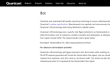
"Quantcastbot/1.0 (+http://www.quantcast.com/bot)"
CMSやチャットアプリ、画像関連
──── CMS関連 ────
そのサイトで使用しているCMSなど調査して、市場占有率などの統計データを作成している会社もあります。
■BuiltWith
「BuiltWith」
http://builtwith.com/biup
"Mozilla/5.0 (Windows NT 10.0; Win64; x64) AppleWebKit/537.36 (KHTML, like Gecko; compatible; BuiltWith/1.0; +http://builtwith.com/biup) Chrome/74.0.3729.131 Safari/537.36"
■WebDataStats
「WebDataStats」
https://webdatastats.com/policy.html
"Mozilla/5.0 (compatible; WebDataStats/1.0 ; +https://webdatastats.com/policy.html)"
こちらは存在しないページへのリクエストが多かったため、セキュリティの脆弱性を探しているのかなと思いましたが、ロシア連邦の法律に従って行動しているとのことです。
──── チャットアプリ系 ────
ビジネスチャットのSlackも特に拒否する必要はないと思います。
■Slack
「Slack」
https://api.slack.com/robots
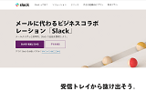
"Slackbot 1.0 (+https://api.slack.com/robots)"
"Slack-ImgProxy (+https://api.slack.com/robots)"
"Slackbot-LinkExpanding 1.0 (+https://api.slack.com/robots)"
■Chatwork
「Chatwork」
https://blog-ja.chatwork.com/2020/05/linkpreview.html
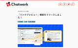
"Chatwork LinkPreview v1"
──── 検索アプリ系 ────
■ファーウェイ
「PetalBot」
https://aspiegel.com/petalbot
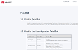
"compatible; PetalBot;+https://aspiegel.com/petalbot"
──── 画像関連 ────
画像関連については、場合によっては著作権の関係で拒否した方がよいケースがあるかもしれません。
■Pinterest
「Pinterestbot」
http://www.pinterest.com/bot.html
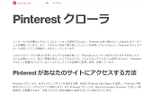
"Mozilla/5.0 (compatible; Pinterestbot/1.0; +http://www.pinterest.com/bot.html)"
Pinterestで著作権のある画像素材を無断で再利用される恐れがある場合、HTMLに「nopin」タグを追加することでピンされるのを防ぐことができます。
https://help.pinterest.com/ja/business/article/prevent-saves-to-pinterest-from-your-site
クロール自体も防ぐ場合、robots.txtや.htaccessで上記のボットのアクセスを拒否するとよいでしょう。
SEO関連
SEO関連のクローラーは非常に多いです。
ツールを使っている場合には拒否する必要はありませんが、特に使っていない場合は拒否しても問題ないかと思います。被リンクのチェックツールが多いですが、サイト内の外部リンクを探してクロールしているものと思います。
■Ahrefs
「AhrefsBot」
http://ahrefs.com/robot/
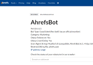
"Mozilla/5.0 (compatible; AhrefsBot/6.1; +http://ahrefs.com/robot/)"
■SEMrush
「SemrushBot」
http://www.semrush.com/bot.html
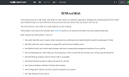
"Mozilla/5.0 (compatible; SemrushBot/3~bl; +http://www.semrush.com/bot.html)"
■Moz
「DotBot」
http://www.opensiteexplorer.org/dotbot
"Mozilla/5.0 (compatible; DotBot/1.1; http://www.opensiteexplorer.org/dotbot, help@moz.com)"
→ Mozの「Link Explorer」で被リンクをチェック
■Majestic
「MJ12bot」
http://mj12bot.com/
"Mozilla/5.0 (compatible; MJ12bot/v1.4.8; http://mj12bot.com/)"
■Serpstat
「serpstatbot」
http://serpstatbot.com/
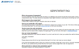
"serpstatbot/1.0 (advanced backlink tracking bot; curl/7.58.0; http://serpstatbot.com/; abuse@serpstatbot.com)"
■SEOkicks
「SEOkicks」
https://www.seokicks.de/robot.html
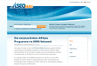
"Mozilla/5.0 (compatible; SEOkicks; +https://www.seokicks.de/robot.html)"
■babbar
「Barkrowler」
https://babbar.tech/crawler
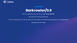
"Barkrowler/0.9 (+https://babbar.tech/crawler)"
■WebMeUp
「BLEXBot」
http://webmeup-crawler.com/
"Mozilla/5.0 (compatible; BLEXBot/1.0; +http://webmeup-crawler.com/)"
■詳細不明（SEO関連ツール）
「SearchAtlas」
■詳細不明（SEO関連ツール）
「AlphaBot」
■詳細不明（SEO関連ツール）
「RSiteAuditor」
"Mozilla/5.0 (compatible; RSiteAuditor)"